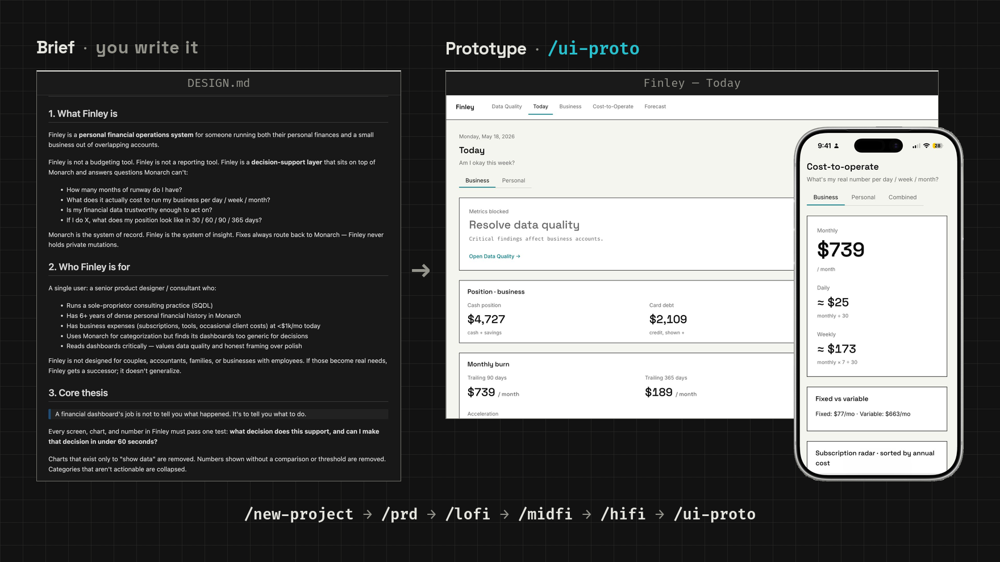
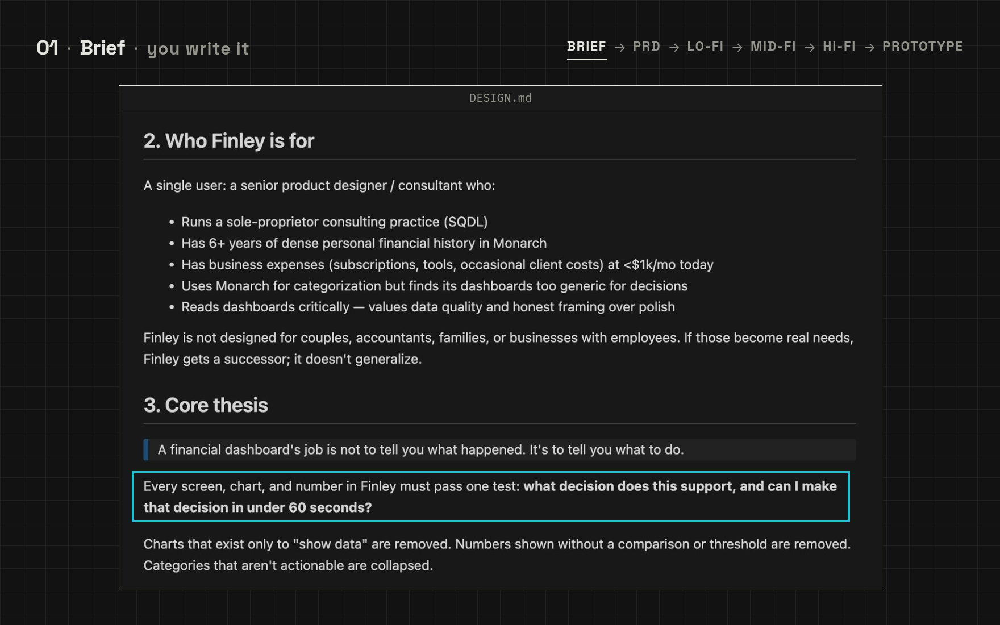
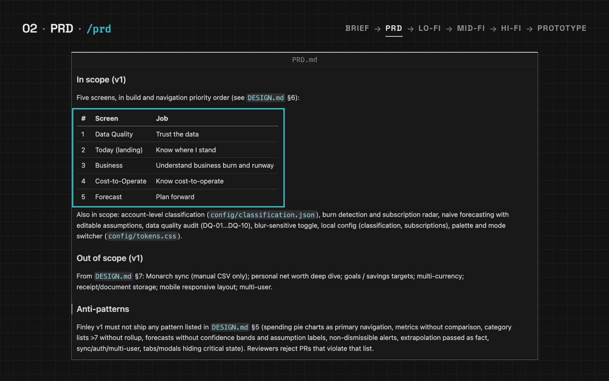
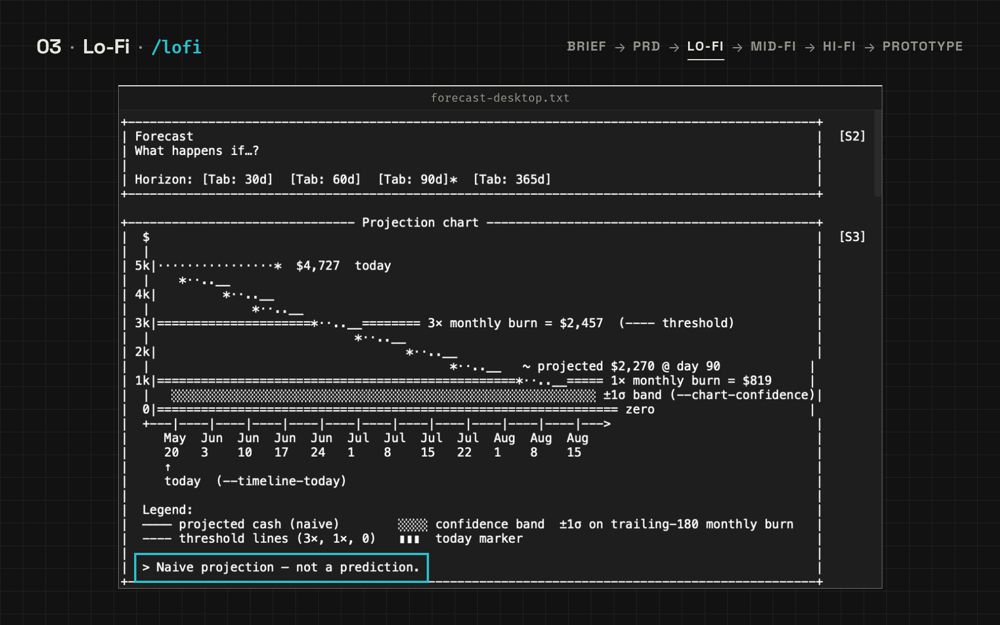
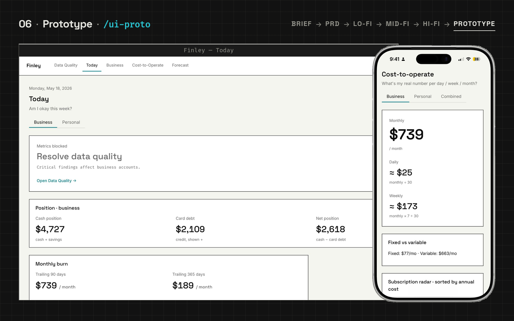

projects/{name}/
Documented /new-project layout. Example name from the README: finley. Not a Finder screenshot — that tree is not in this repo.
projects/finley/ |-- app/ |-- docs/ | |-- design-brief.md | `-- PRD.md |-- design/ | |-- wireframes/lofi/ | |-- wireframes/midfi/ | `-- ui-design/ `-- marketing/ # optional



From a one-page brief to a clickable prototype